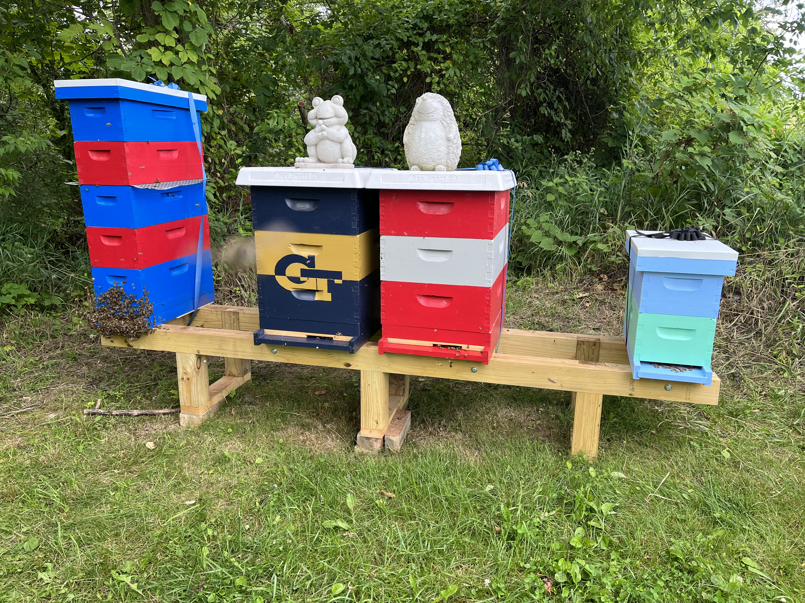

Overview

Sports Fan Colors
Your hive boxes generally need to be painted to protect the wood from the elements and extend the life of your investment. This is especially true as the boxes are not made from treated wood. Some hives are made from cedar which does not need to be painted; however they are generally rarer to find.
It is hard to paint the boxes once they are in place with a colony of bees, so it is best to paint them before adding them to the hive. I recommend you paint a few extra boxes and keep them in storage so they are ready when needed. This is a good winter maintenance task.
Hives have been traditionally painted white.
Now, it is quite common to have multicolor hives as shown to the right.
What I see most often falls into one of these categories:
- Paint them all white. This is especially common with commercial beekeepers.
- Paint them a specific style which makes you happy when you see the hives. This is especially common with hobbyist beekeepers.
- Lighter colors work best for hotter climates, especially if your hives are in direct sun most or all of the day.
- Darker colors work best for colder climates.
- Paint them with the reject paint you can by any store which sells paint. (The local recycling center may have paint you can get for "free".)
- Get cedar hive boxes.
Notes on Painting Hive Boxes
When painting hive boxes, use non-toxic, low-VOC exterior paint. If the wood was not already primed, you will need 3 coats of paint. Primed wood can usually get by with 2 coats.
Paint only the outside parts of the box. I also paint the top edge of the boxes.
More Information
Books and Papers
- ABC and XYZ of Bee Culture, by The A.I. Root Company.